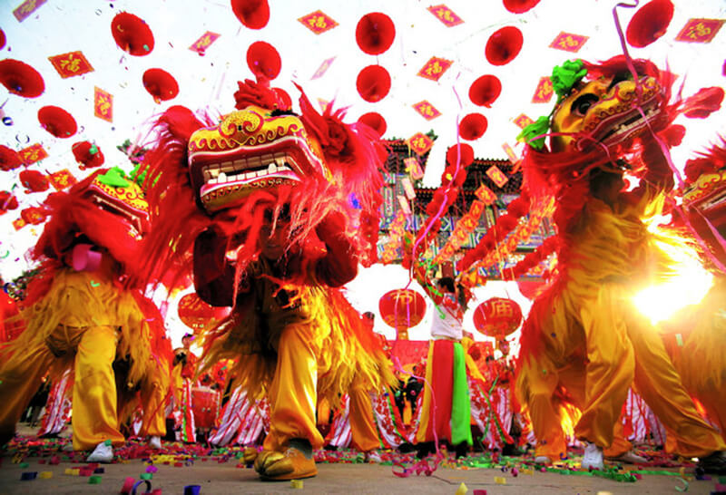

Tet (New Year)
January 25
Tet (New Year) is the largest, most celebrated festival in Vietnam. Like many of Vietnam’s festivals, Tet honors ancestors, so many return home to celebrate with their families. During the day it’s common to see gentle rituals such as the handing out of flowers and lighting candles at the temple. But in the evening celebrations become livelier with fireworks, colorful performances and lots of street food stalls.
Wandering Souls Day (Trung Nguyen)
15th day of the 7th lunar month

The story behind Wandering Souls Day, the second largest festival in Vietnam after Tet, is one of the most interesting of Vietnam’s festivals. This Buddhist celebration is built on the belief that a person’s soul is sent to heaven or hell when they die. On Wandering Souls Day, those sinful souls who find themselves in the latter may return to their mortal homes for absolution. The day before the celebration, families travel to the temples to make offerings of flowers and food for those souls without relatives, and alters are set up in each home with food offerings to guide ancestral spirits home.
Dinagyang Festival
Fourth weekend of January

Dinagyang Festival is one of the largest festivals in the Philippines. It’s when Iloilo takes the street festivals to the next level. The city converts all its streets into a massive open-air festival and everyone is invited. Mouthwatering local dishes are overflowing whilst there are bands playing in every alley you turn to. Every barangay and school will come together and have an extravagant dance competition.
Panagbenga Festival
Throughout February

February highlights the season of blooming flowers and is also to commemorate The Philippines rise from the disastrous 1990 earthquake in Luzon. Marvelous floats, designed with various types of flowers, conquer the streets of Baguio City. Tourists can expect street dancing by dancers wearing flower-inspired costumes.
Phi Ta Khon (Ghost Festival)
The weekend of the lunar calendar’s 6th full moon

Also known as the Ghost Festival, this is one of the most interesting Thailand traditional festivals. Phi Ta Khon is a festival that combines religious traditions, a fun-loving party atmosphere, and local handicrafts. It is celebrated for three days with thousands of locals wearing colorful, ghastly masks with stretched faces and phallic noses, painted in bright, and gaudy colors.
Songkran Festival (Water Festival)
April 13th to 15th
The Water Festival in Thailand is perhaps one of the most fun festivals in the country, and possibly in the world! This long and large festival involves a 3-day water fight in which people participate across the country. With drinking, music, dancing, and people drenched from head to toe, people use buckets, hose pipes, water guns, and anything else that they can get their hands on to use to splash water on others.